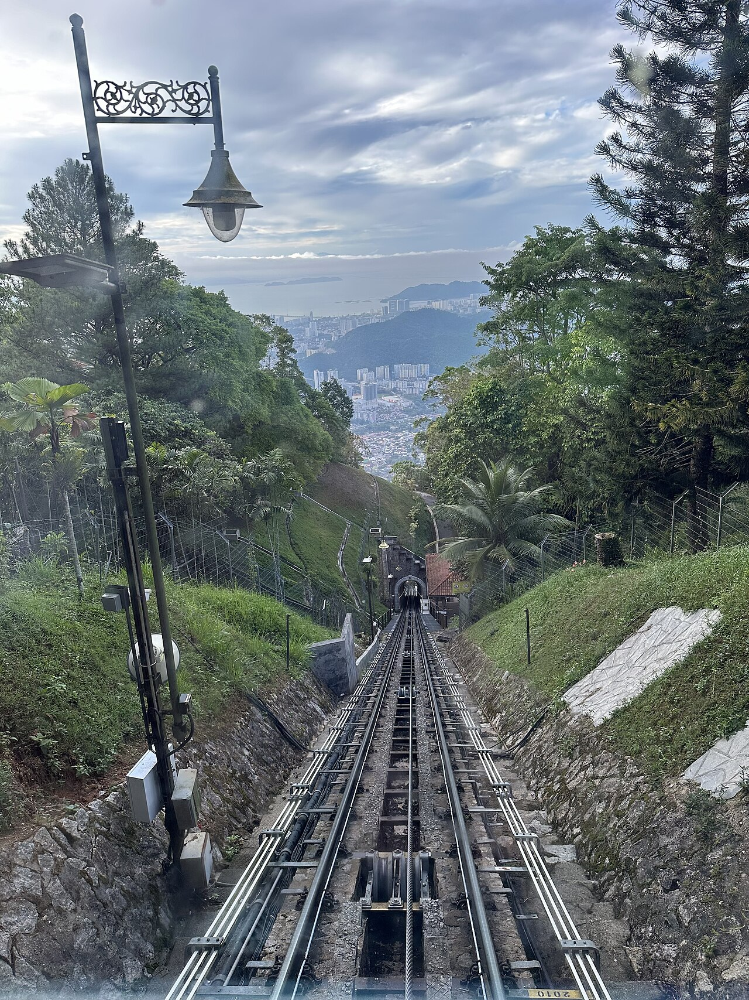

01
Nature · Panorama
Penang Hill
Bukit Bendera · 833 m above the sea
Ride one of the world's steepest funicular railways into cool cloud-forest air. At the top: colonial bungalows, a canopy walk, and an uninterrupted view of the entire island stretching to the mainland. Sunset here is the single best photograph you will take all trip.
⏱ 2–3 hrs
🌡 5°C cooler
🚠 Funicular
📸 Golden hour
Open in Google Maps